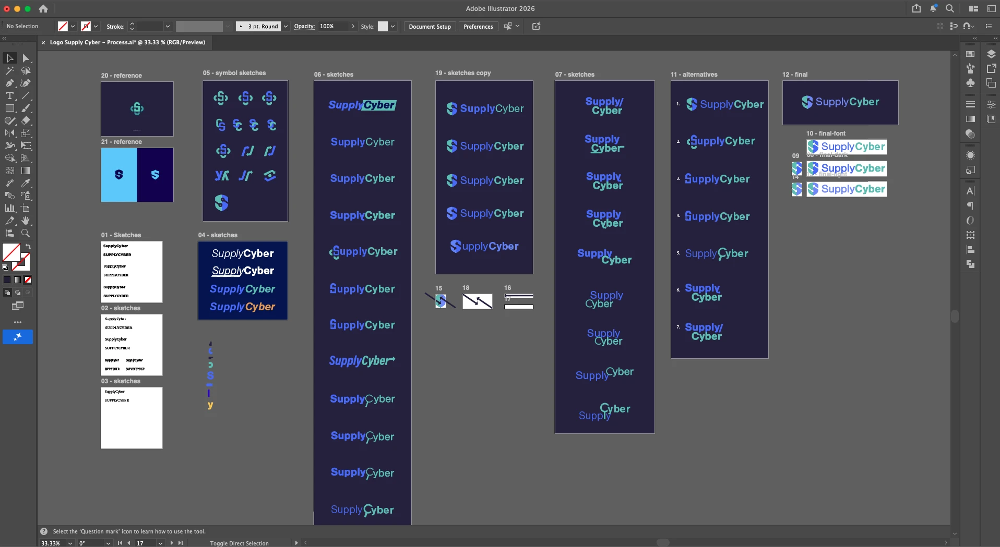
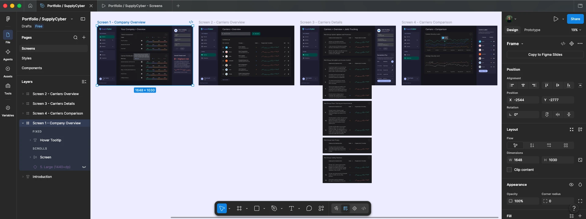

Context
SupplyCyber audits and monitors the transportation providers a company relies on — carriers and brokers that standard vendor security checks often miss, even though a breach on their end can spread straight back to the client.
Felipe C., CEO and co-founder of Loadsmart, invited me to bring this idea to life. We agreed on three deliverables: a logo and visual identity, a pitch deck for investors, and a high-fidelity Figma prototype of the web app.
The problem
The deck builds the case before showing the product: cyberattacks on supply chains and transportation are rising, that risk extends to the client's own operations, and there's no efficient way to audit it today — which is where SupplyCyber comes in.
The solution
Past the pitch, the deck walks through how the product works: auditing every carrier, grading them, and letting the client set thresholds and track improvement over time.
Visual identity
I created the mark by combining a shield and two arrows forming the letter "S" of SupplyCyber. The shield represents security, and the arrows — pointing back and forth — represent the flow of trucks the platform monitors.
The bright bluish-purple is a color typicaly associated to technology while green is easily linked to something positive, good and safe.
I explored several directions before narrowing down to this concept together with the founder.

Design system
To move fast without sacrificing consistency, I built an initial design system based on Material Design — Google's open-source design language with a well-tested library of components for buttons, cards, navigation, dialogs, and inputs.
Adapting it let me focus on SupplyCyber's data-dense interface instead of reinventing every UI pattern, with components built for both light and dark themes.
Prototype
I designed 4 high-fidelity screens in Figma to support this: the company-wide overview, the carriers list, a carrier's detail view with its remediation plan, and a chart comparing carriers' security levels over time.
Try the interactive prototype below, or open it in a new tab.

Conclusion
In one month, working solo, I helped turn an early idea into something investors could see and understand — complete with a visual identity, a pitch deck, a design system, and a high-fidelity prototype.
Together, they gave SupplyCyber a credible story for investor conversations and a solid design foundation to build on afterward.